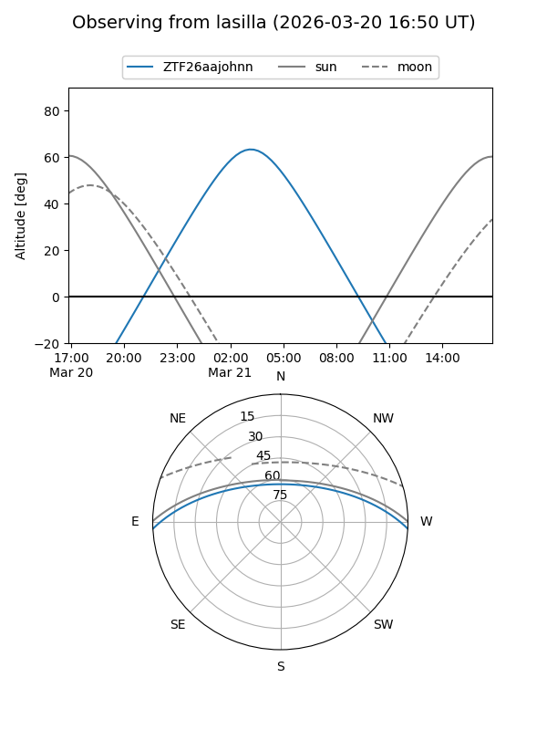
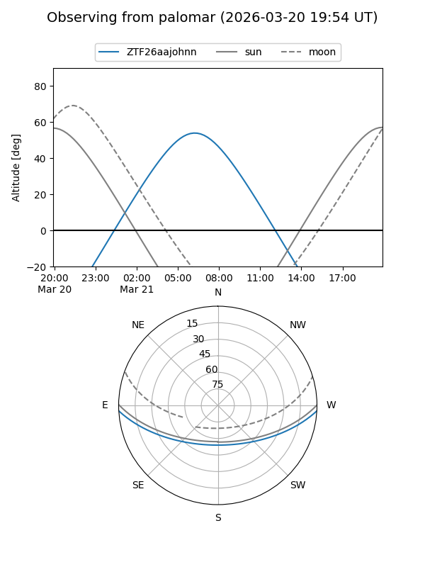

ZTF26aajohnn
Target ZTF26aajohnn at 2026-03-21 09:16
Aliases and brokers:
FINK: link
Lasair: link
ALeRCE: link
alt names
ZTF26aajohnn (ztf,fink_ztf)
Coordinates:
equatorial (ra, dec) = 155.1110,-2.53232
equatorial (HMS+DMS) = 10:20:26.64,-02:31:56.34
galactic (l, b) = (246.0860,+43.06949)
Flags:
Photometry:
last ztfg=19.45
1 ztfg detections
Lightcurve
Visibility


Additional plots